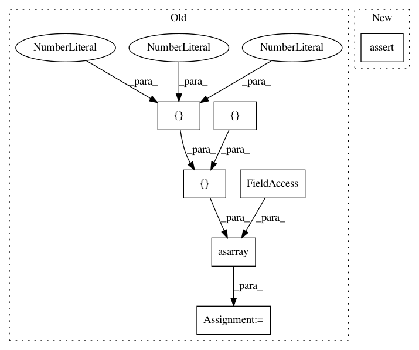

4b50eb041ce3a84e9ffdc37232a99f91133dbd2c,nilearn/input_data/tests/test_nifti_spheres_masker.py,,test_sphere_extraction,#,19
Before Change
masker.fit()
// Test the transform
s = masker.transform(img)
mask = np.asarray(
[
[
[0, 0, 0],
[0, 1, 0],
[0, 0, 0]
],
[
[0, 1, 0],
[1, 1, 1],
[0, 1, 0]
],
[
[0, 0, 0],
[0, 1, 0],
[0, 0, 0]
]
], dtype=bool
)
assert_array_equal(s[:, 0], np.mean(data[mask], axis=0))
def test_anisotropic_sphere_extraction():
data = np.random.random((3, 3, 3, 5))
After Change
masker = NiftiSpheresMasker([(1, 1, 1)], radius=1, mask_img=mask_img)
masker.fit()
s = masker.transform(img)
assert_array_equal(s[:, 0],
np.mean(data[np.logical_and(mask, mask_img.get_data())],
axis=0))
def test_anisotropic_sphere_extraction():
data = np.random.random((3, 3, 3, 5))
In pattern: SUPERPATTERN
Frequency: 3
Non-data size: 7
Instances
Project Name: nilearn/nilearn
Commit Name: 4b50eb041ce3a84e9ffdc37232a99f91133dbd2c
Time: 2015-05-07
Author: abraham.alexandre@gmail.com
File Name: nilearn/input_data/tests/test_nifti_spheres_masker.py
Class Name:
Method Name: test_sphere_extraction
Project Name: nilearn/nilearn
Commit Name: 958eeaaa462b1c7f8f98dea8ba2cec5cf6ab32d8
Time: 2015-05-13
Author: abraham.alexandre@gmail.com
File Name: nilearn/input_data/tests/test_nifti_spheres_masker.py
Class Name:
Method Name: test_sphere_extraction
Project Name: tensorflow/tensorflow
Commit Name: 84223431bbc0f88546e1b12e904d79e972edabe2
Time: 2020-11-18
Author: gardener@tensorflow.org
File Name: tensorflow/python/kernel_tests/relu_op_test.py
Class Name: ReluTest
Method Name: testGradientFloat16